Trang 1
USER MANUAL
_MINILAB 3
Trang 2
Special Thanks
DIRECTION
Frédéric Brun Kevin Molcard
DEVELOPMENT
Nicolas Dubois (lead)
Aurore Baud
Jérôme Blanc
Valentin Foare
Florian Rameau (lead)
Loïc Baum
Yannick Dannel
Thibault Senac
Farès Mezdour (lead)
Timothée Béhéty
Antonio Eiras
QUALITY
Thomas Barbier Emilie Jacuszin Aurélien Mortha
MANUAL
Sven Bornemark (writer) Stephen Fortner (writer) Jimmy Michon
© ARTURIA SA – 2022 – All rights reserved. 26 avenue Jean Kuntzmann 38330 Montbonnot-Saint-Martin FRANCE www.arturia.com
The information contained in this user manual is believed to be correct at the time of release. The manual is subject to change without notice and does not represent a commitment on the part of Arturia.
Arturia reserves the right to change or modify any of the specifications without notice or obligation to update the hardware that has been purchased.
The software described in this manual is provided under the terms of a license agreement or non-disclosure agreement. The software license agreement specifies the terms and conditions for its lawful use.
No part of this manual may be reproduced or transmitted in any form or by any purpose other than purchaser’s personal use, without the express written permission of ARTURIA S.A.
All other products, logos or company names quoted in this manual are trademarks or registered trademarks of their respective owners.
Product version: 1.0.5
Revision date: 17 October 2022
Trang 3
Thank you for purchasing the Arturia MiniLab 3!
This manual covers the features and operation of Arturia’s MiniLab 3, a full-featured MIDI controller designed to work with any DAW software or plug-in you own. Whether in the studio, on the road, or at home, we are confident that the MiniLab 3 will become an indispensable tool in your kit.
Be sure to register your MiniLab 3 as soon as possible! There is a sticker on the bottom panel that contains the serial number of your unit and an unlock code. These are required during the online registration process at www.arturia.com. Please make sure to store the enclosed registration card in a safe place.
Registering your MiniLab 3 provides the following benefits:
• Special offers restricted to MiniLab 3 owners. As a registered owner, you also have access to an exclusive software bundle that includes:
◦ Arturia's Analog Lab Intro containing thousands of ready-to-use instruments and sounds
◦ Access to the latest versions of the included software: Ableton Live Lite, Native Instruments The Gentleman and UVI Model D pianos plus Loopcloud and Melodics subscriptions.
MIDI Control Center
The MIDI Control Center app can be freely downloaded from Arturia Downloads & Manuals. Please install it now; you will need this app when updating hardware and editing MiniLab 3 settings.
Arturia Software Center (ASC)
If you haven't installed ASC yet, please go to this web page: Arturia Downloads & Manuals.
Look for the Arturia Software Center near the top of the page, and then download the installer version for the system you’re using (Windows or macOS). ASC is a remote client for your Arturia account, letting you conveniently manage all your licenses, downloads, and updates from one place.
After you complete the installation, proceed to do the following:
• Launch the Arturia Software Center (ASC).
• Log into your Arturia account from ASC’s interface.
• Scroll down to the 'My Products' section of ASC.
• Click on the 'Activate' button next to the software you want to start using (in this case, Analog Lab Intro).
It's as simple as that!
MiniLab 3 is easy to use and you’ll probably start experimenting with it right out of the box. However, please be sure to read this manual even if you are an experienced user, as we describe many useful tips that will help you get the most out of your purchase. For reference, you may also want to download the MiniLab 3 Cheat Sheet that you can find during the registration process.
We're sure you will find MiniLab 3 a powerful tool in your setup and we hope you'll use it to its fullest potential.
Happy music making!
The Arturia team
Trang 4
Special Message Section
IMPORTANT:
The product and its software, when used in combination with an amplifier, headphones or speakers, may be able to produce sound levels that could cause permanent hearing loss. DO NOT operate for long periods of time at a high level or at a level that is uncomfortable. If you encounter any hearing loss or ringing in the ears, you should consult an audiologist.
NOTICE:
Service charges incurred due to a lack of knowledge relating to how a function or feature works (when the product is operating as designed) are not covered by the manufacturer’s warranty, and are therefore the owner's responsibility. Please study this manual carefully and consult your dealer before requesting service.
Precautions include, but are not limited to, the following:
1. Read and understand all the instructions.
2. Always follow the instructions on the instrument.
3. Before cleaning the instrument, always remove the USB cable. When cleaning, use a soft and dry cloth. Do not use gasoline, alcohol, acetone, turpentine or any other organic solutions; do not use a liquid cleaner, spray or cloth that's too wet.
4. Do not use the instrument near water or moisture, such as a bathtub, sink, swimming pool or similar place.
5. Do not place the instrument in an unstable position where it might accidentally fall over.
6. Do not place heavy objects on the instrument. Do not block openings or vents of the instrument; these locations are used for air circulation to prevent the instrument from overheating. Do not place the instrument near a heat vent at any location with poor air circulation.
7. Do not open or insert anything into the instrument that may cause a fire or electrical shock.
8. Do not spill any kind of liquid onto the instrument.
9. Always take the instrument to a qualified service center. You will invalidate your warranty if you open and remove the cover, and improper assembly may cause electrical shock or other malfunctions.
10. Do not use the instrument with thunder and lightning present; otherwise it may cause long distance electrical shock.
11. Do not expose the instrument to hot sunlight.
12. Do not use the instrument when there is a gas leak nearby.
13. Arturia is not responsible for any damage or data loss caused by improper operation of the instrument.
Trang 5
Table Of Contents
1. Welcome to MiniLab 3 .............................................................................................................................................. 2
1.1. What’s MiniLab 3?................................................................................................................................................................. 2 1.2. MiniLab 3 Features Summary ...................................................................................................................................... 3
2. Installation....................................................................................................................................................................... 4 3. Hardware Overview.................................................................................................................................................. 5
3.1. Front Panel................................................................................................................................................................................. 5 3.2. Rear Panel................................................................................................................................................................................. 6 3.3. Control Values Display...................................................................................................................................................... 6
4. MiniLab 3 operations ................................................................................................................................................. 7
4.1. Shift Functions......................................................................................................................................................................... 7 4.2. Octave Up/Down and Transpose............................................................................................................................... 7 4.3. Touch Strips.............................................................................................................................................................................. 8 4.4. Pads............................................................................................................................................................................................... 8
4.4.1. Secondary functions.................................................................................................................................................................................................. 8
4.4.2. Pads and Program Selection .............................................................................................................................................................................. 9
4.5. Arpeggiator............................................................................................................................................................................... 9
4.5.1. Activating and deactivating the Arpeggiator ............................................................................................................................................. 9
4.5.2. Entering and leaving Arpeggio Edit mode............................................................................................................................................... 10
4.5.3. Editing the Arpeggiator — Main Encoder knob......................................................................................................................................... 11
4.5.4. Editing the Arpeggiator — Quick Access..................................................................................................................................................... 12
4.5.5. Arpeggiator Parameters....................................................................................................................................................................................... 12
4.6. Tap Tempo............................................................................................................................................................................... 15 4.7. Hold Mode................................................................................................................................................................................ 16 4.8. Chord Mode............................................................................................................................................................................ 16
4.8.1. Creating a Chord ........................................................................................................................................................................................................ 16
4.8.2. The Arpeggiator, Chord Mode and Hold Mode ....................................................................................................................................... 17
4.9. Vegas Mode............................................................................................................................................................................. 17 4.10. Factory Reset....................................................................................................................................................................... 17
5. MiniLab 3 and Analog Lab................................................................................................................................... 18
5.1. Important Note — It’s All Malleable.......................................................................................................................... 18 5.2. Audio and MIDI Setup..................................................................................................................................................... 18
5.2.1. Analog Lab MIDI Settings..................................................................................................................................................................................... 19
5.3. Browsing Presets.............................................................................................................................................................. 20
5.3.1. Browsing Within Types......................................................................................................................................................................................... 20
5.4. Knobs and Faders.............................................................................................................................................................. 21
5.4.1. Knobs 1-4......................................................................................................................................................................................................................... 22
5.4.2. Knobs 5-8 ...................................................................................................................................................................................................................... 22
5.4.3. Faders.............................................................................................................................................................................................................................. 23
5.4.4. Pads .................................................................................................................................................................................................................................. 23
6. DAW Control ................................................................................................................................................................. 24
6.1. Custom Controlled DAWs .............................................................................................................................................. 24
6.1.1. Transport Control........................................................................................................................................................................................................ 25
6.2. DAW Control with Mackie Control Universal................................................................................................... 25 6.3. Analog Lab Mode............................................................................................................................................................... 26
7. Declaration of Conformity................................................................................................................................... 27 8. Software License Agreement............................................................................................................................ 28
Trang 6
1. WELCOME TO MINILAB 3
1.1. What’s MiniLab 3?
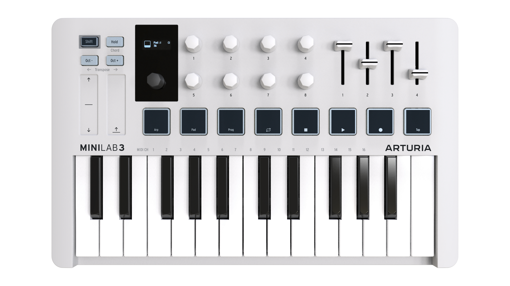
MiniLab 3 is a compact MIDI keyboard controller. But don’t let its small size fool you — it’s huge on features usually found on larger and more expensive keyboards. You’ll play MiniLab3 using its slim-key 25-note keyboard with velocity sensitivity and the eight backlit performance pads that sense velocity and aftertouch.
We have also rethought and expanded the user interface compared to its predecessor MiniLab MkII. Eight endless encoder knobs are now joined by four faders, not to mention a dentented main encoder/selection button with a bright OLED display.
Out of the box, MiniLab 3 is tightly integrated with our Analog Lab software, letting you browse presets and adjust parameters without reaching for your mouse.
MiniLab 3 also automatically recognizes and controls popular DAWs including Ableton Live, Apple Logic Pro, Reason Studios Reason, Bitwig Studio, and Image-Line FL Studio. (Certain DAWs, such as Steinberg's Cubase, are supported via the Mackie Control Universal protocol.) You can control your DAW transport with the pads, use the knobs to tweak plug-in parameters, and adjust track volumes, sends, and pans by using the MiniLab 3 faders.
MiniLab 3 also features our innovative pitch and modulation touch-strips plus an onboard arpeggiator that brings plenty of classic synth vibes.
In addition to Analog Lab Intro, MiniLab 3 includes a license for Ableton Live Lite, an introductory but powerful version of the DAW that revolutionized clip-based music
production and performance. You can trigger clips with the MiniLab’s performance pads, adjust the current plug-in with its encoders (knobs), and much more.
As a MiniLab 3 owner, you also become the owner of Native Instruments' The Gentleman (a fine sampled acoustic upright piano), UVI Model D (a German concert grand piano), a Loopcloud subscription and a Melodics subscription.
On top of that, Arturia's MIDI Control Center software (a free download) lets you map parameters directly to MiniLab 3’s physical controls to create custom configurations. You can then save these as user programs and recall them from the MiniLab 3 hardware.
2 Arturia - User Manual MiniLab 3 - Welcome to MiniLab 3
Trang 7
For example, would you like to make the pads play a custom scale of bass notes — using a different sound on a different MIDI channel — while you solo or play chords on the keyboard? No problem!
! For further information about the MIDI Control Center, our companion software available for
download from the Arturia website, please consult the MIDI Control Center manual.
For musicians on the go, laptop-based performers who have to squeeze into crowded DJ booths, home studio creators with limited desktop space, and many other sound explorers we haven’t even thought of yet, MiniLab 3 is simply the biggest little MIDI controller on the planet.
1.2. MiniLab 3 Features Summary
• 25-key slim-key velocity-sensitive keyboard.
• Eight velocity- and pressure-sensitive RGB pads.
• Two pad banks for a total of 16 functional pads.
• Dentented and clickable main encoder knob for navigation.
• High-contrast OLED display visible even under bright light.
• Eight endless encoder knobs.
• Four faders.
• Low-profile touch-strips for pitch-bend and modulation.
• Shift button provides access to alternate functions.
• Hold button for hands-free (and feet-free) sustain.
• Octave and semitone transpose functions.
• Full-featured classic synth style arpeggiator.
• Chord mode memorizes and plays user chords from one note.
• USB-C powered and highly efficient; can even be powered from an iPad.
• MIDI via USB-C and standard 5-pin MIDI output.
• 1/4-inch TRS input accepts sustain, switch, or expression/continuous control pedal.
• Included software: Arturia Analog Lab Intro, Ableton Live Lite, Native Instruments The Gentleman and UVI Model D pianos, Loopcloud and Melodics subscriptions.
• USB-C to USB-A cable included.
Arturia - User Manual MiniLab 3 - Welcome to MiniLab 3 3
Trang 8
2. INSTALLATION
The first thing to do when you receive your MiniLab 3, after having completed the registration process, is to update its firmware. Indeed, Arturia releases periodic firmware updates to add functionality and improve performance.
To proceed with the update, you'll first need to download and install the MIDI Control Center (MCC), the powerful companion software we designed to work with our hardware, from our Downloads & Manuals page.
Once this is done, you can follow these steps to upgrade the firmware of MiniLab 3:
1. Download the latest firmware either from the 'Resources' tab of the MiniLab 3 product
page, or from the Downloads and Manuals page of our website (search for MiniLab 3).
2. Launch the MIDI Control Center.
3. Please make sure MiniLab 3 is selected under Device in MIDI Control Center. Click on the
box showing the firmware revision:
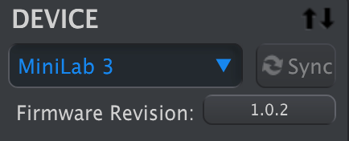
4. Click “Upgrade” in the dialogue box that follows, then navigate to the firmware file on
your computer and select it. The four buttons are now lit in blue, running in cycle.
5. Follow the rest of the onscreen instructions. When the firmware loading is complete,
MiniLab 3 will restart and be ready for use.
Once your MiniLab 3 is ready, you can start using it to control various virtual instruments, like our own Analog Lab V [p.18].
For more information on how the MCC works with the MiniLab 3, please refer to the dedicated manual in the MiniLab 3 section of our Downloads & Manuals page.
4 Arturia - User Manual MiniLab 3 - Installation
Trang 9
3. HARDWARE OVERVIEW
3.1. Front Panel
The controls on the front panel of MiniLab 3 are as follows.
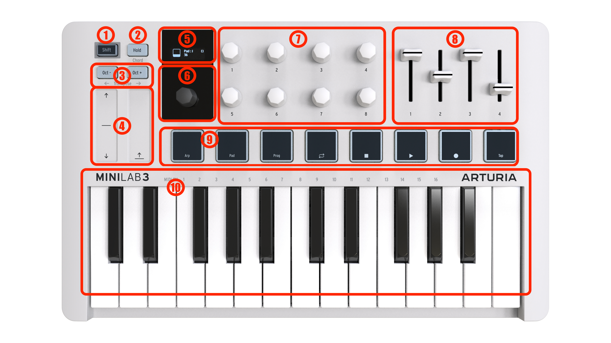
Number Name Description
1. Shift Button Provides access to alternate functions [p.7].
2. Hold Button Sustains notes played from the keys (not the pads) when active.
3. Octave Buttons [p.7] Transposes the keyboard up or down an octave.
4. Touch Strips [p.8] These low-profile controllers act as pitch-bend and modulation
“wheels”.
5. OLED Display Shows parameter names, values, and all information about MiniLab
3 status.
6. Dentented Main Encoder Navigates Presets in Analog Lab [p.18] and performs other functions in
DAWs [p.24]. Is also a clickable select button.
7. Endless Encoder Knobs Control parameters in software e.g. instrument parameters.
8. Faders Control parameters in software e.g. instrument parameters.
9. Pads [p.8] For finger drumming and playing MIDI notes, to access MiniLab 3
functions, and control DAW transport. Velocity- and pressure-sensitive.
10. MIDI Keyboard Keyboard with 25 velocity sensitive slim-keys. Velocity curve can be
edited in the MIDI Control Center App.
Arturia - User Manual MiniLab 3 - Hardware Overview 5
Trang 10
3.2. Rear Panel
Here are the connections on MiniLab3’s rear panel.
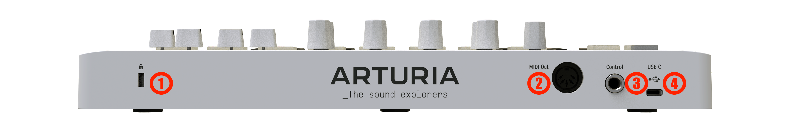
Number Name Description
1. Kensington Lock
Port This socket accepts a standard Kensington laptop lock for anti-theft.
2. MIDI Out 5-pin DIN MIDI output for controlling hardware synth modules. Can also be
used as MIDI Thru.
3. Control Pedal
1/4" TRS; accepts sustain pedal, footswitch, or a continuous controller
Input
(expression pedal).
4. USB-C Port For providing power to the unit and communicating with a computer or other
external hardware.
! Velocity sensitive: Both the MIDI keyboard and the pads on MiniLab 3 are sensitive to how hard
you play them. Hit harder for higher volume.
! Pressure Sensitivity: Playing a pad and then pressing it harder will send out Pressure data that
can trigger various modulation changes (filter, volume etc.). Pressure sensivity is sometimes called
Aftertouch.
3.3. Control Values Display
By default, the main OLED display momentarily shows a graphic of whatever control you touch, along with the value sent by that control as you move it. For example, this is what is displayed when you move a knob:
When you strike a pad, the display first shows your initial velocity. If you then apply after- pressure, it will then display that value.
6 Arturia - User Manual MiniLab 3 - Hardware Overview
Trang 11
4. MINILAB 3 OPERATIONS
4.1. Shift Functions
Holding Shift while operating certain controls or pressing any of the pads executes alternate functions. This next table summarizes what they are for applicable controls. We’ll provide more details on each in upcoming chapters.
Control Shift Function
Hold Button Engages or disengages Chord Mode [p.16]. Long-pressing while holding Shift enters Create
Chord mode.
Octave Shift
Buttons Transpose the keyboard up or down in semitones.
Dentented Main
Encoder knob Varies depending on connected software.
Pad 1 Toggles Arpeggiator [p.9] on and off. Long-pressing the pad while holding Shift enters Arp
Edit mode.
Pad 2 Switches pads between bank A and bank B.
Pad 3 Switches MiniLab 3 modes between Arturia instrument control and DAW control [p.24]
modes. From here, you can also switch between User Programs you have created.
Pads 4–7 Controls transport of connected DAW (Loop mode on/off, Stop, Play, and Record).
Pad 8 Allows you to enter Tap Tempo [p.15] information.
Keyboard F in first octave to G# in second octave select MIDI transmit channels 1–16.
4.2. Octave Up/Down and Transpose
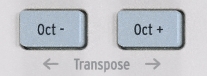
To shift the keyboard up or down an octave, press the Oct+ or Oct- buttons. You can transpose 4 octaves down and 4 octaves up. When the keyboard is transposed one or several octaves, the button turns white.
To transpose the keyboard up or down one semitone, hold Shift and press either Octave button. When the keyboard is transposed one or several semitones, the button turns blue.
When both octave and semitone are engaged, the button is blinking white and blue.
The OLED display will reflect your action in either case. Octave-shift and transpose apply to the keyboard only, not the pads. The pads send MIDI note numbers that may be edited in MIDI Control Center app.
! By pressing Oct+ and Oct- at the same time, any octave shift or transposition is reset.
Arturia - User Manual MiniLab 3 - MiniLab 3 operations 7
Trang 12
4.3. Touch Strips
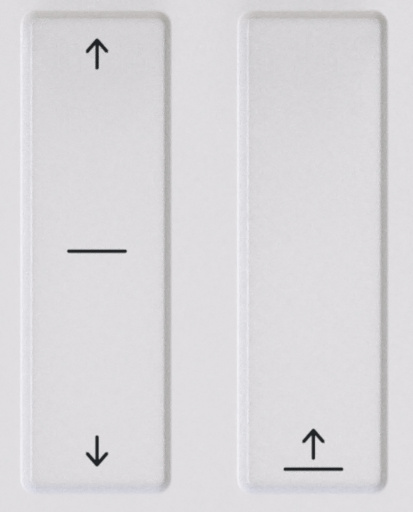
The pitch-bend strip on the left acts like a spring-loaded pitch wheel: when you remove your finger, the “wheel” snaps back to the center. The bend range can be adjusted in the MIDI Control Center software (see separate manual). The MIDI Control Center app allows you to customize the function of almost every physical control on your MiniLab 3 or other Arturia controller.
Moving your finger up the modulation strip on the right increases the modulation amount. As with modulation wheels on synths, the value stays where you leave it when you remove your finger, until you manually swipe the modulation strip back to zero.
The modulation strip sends MIDI CC 1 (the usual control number for modulation) by default, but this can also be changed in the MIDI Control Center app.
Movements on these strips will be reflected in the OLED Display.
4.4. Pads

The eight velocity- and poly pressure-sensitive pads on MiniLab 3 serve multiple purposes. In their default state, they send MIDI notes on channel 10 — the channel most commonly used for drums in a DAW or multi-timbral synthesizer.
4.4.1. Secondary functions
Hold Shift and the pads perform alternate tasks. The most common layer of these tasks is described in the Shift Functions [p.7] table above: Shift + Pad 1 turns the Arpeggiator on and off, and so on.
When Shift is held, pads 1-3 are lit in blue. Pads 4-7 are lit to reflect DAW transport functions: amber for loop mode, white for stop, green for play, and red for record.
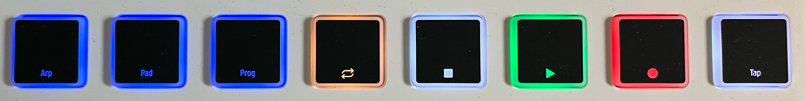
8 Arturia - User Manual MiniLab 3 - MiniLab 3 operations
Trang 13
Hold Shift and press Pad 2 to switch between pad banks A and B. Bank B sends other MIDI notes, also on channel 10. The default note numbers — which may all be changed for User Modes in the MIDI Control Center app — are:
Pad Bank 1 2 3 4 5 6 7 8
A 36 (C1) 37 (C#1) 38 (D1) 39 (D#1) 40 (E1) 41 (F1) 42 (F#1) 43 (G1)
B 44 (G#1) 45 (A1) 46 (A#1) 47 (B1) 48 (C2) 49 (C#2) 50 (D2) 51 (D#2)
4.4.2. Pads and Program Selection
MiniLab 3 has several main operating modes: ARTURIA and DAWs plus the 5 custom User Programs you can create. Hold Shift and press Pad 3 to switch between them.
• ARTURIA mode: Automatically detects if Analog Lab is open. All controls are automatically mapped control Analog Lab.
• DAWs mode: For controlling digital audio workstation software. Supported DAWs are automatically mapped. For all other DAWs, transport controls will work.
• User Presets: MiniLab 3 can store up to five User Programs — custom control mappings you have created in the MIDI Control Center app (see separate manual). User Presets may be individually enabled or disabled in the Device Settings of the MIDI Control Center app. We will explain what to do in more detail in Chapter 5, but for now, know that holding Shift and pressing Pad 3 will also cycle through any enabled user presets alongside the ARTURIA and DAWs modes as described above.
4.5. Arpeggiator
MiniLab 3 includes a fun and flexible Arpeggiator fashioned after those in classic synths, letting you craft rolling, percolating patterns out of held chords.
An arpeggiator is included in many synthesizer models. It takes chords played on the keyboard and converts them into arpeggios. An arpeggiator usually includes controls for Speed, Range (in octaves), Mode (if the pattern moves up, down, or up/down etc.), and Hold (continues playing the arpeggio after the keys have been released).
Arpeggiator information is transmitted as MIDI data over the USB-C port and/or 5-pin MIDI output, depending on which are selected in your host software’s MIDI settings.
4.5.1. Activating and deactivating the Arpeggiator
To turn the arpeggiator on and off, hold Shift and press Pad 1. The MiniLab display will momentarily reflect its state:
Arturia - User Manual MiniLab 3 - MiniLab 3 operations 9
Trang 14
When the Arpeggiator is engaged, the display (which in this example shows a Preset name from Analog Lab) shows a small icon of four dots at the lower right corner:
! The Arpeggiator is triggered only by the keyboard, not the pads.
! To determine whether the Arpeggiator is on or off, press the Shift knob. Apr Pad is light blue =
Arpeggiator On. Arp Pad is dark blue = Arpeggiator Off.
! When the Arpeggiator is activated, the pads can still be used to trigger sounds.
! While in Arpeggiator Edit mode, you can start and stop the Arpeggiator by turning encoder knob 1
or main encoder knob 1. The display goes from Off to On and vice versa.
4.5.2. Entering and leaving Arpeggio Edit mode
You enter Arpeggio Edit mode by holding Shift and pressing the Arp button for a second.
You leave Arpeggio Edit mode by holding Shift button and pressing Arp button briefly.
When in Arpeggiator Edit mode, the display will always show this:
! Arpegggio mode (whether the arpeggiator is running or not) and Arpeggio Edit mode (where you
tweak the arpeggiator's behavior) are somewhat independent of each other, i.e. the Arpeggiator doesn't
automatically start just because you enter Arpeggiator Edit mode. Also, quitting arp menu doesn't turn
off the Arpeggiator.
10 Arturia - User Manual MiniLab 3 - MiniLab 3 operations
Trang 15
4.5.3. Editing the Arpeggiator — Main Encoder knob
Please read the previous chapters about the two distinct Apreggiator modes – Arpeggiator Play and Arpeggiator Edit. Once you've learned that part, we can start editing the way the Arpeggiator plays patterns.
So, Hold Shift and hit Pad 1 to activate the Arpeggiator. Then, hold Shift and press Pad 1 for a second to get into Arpeggiator Edit mode.
The display will now look like this:

The Arpeggiator parameters are:
• On/Off: Engages or disengages the Arpeggiator.
• Mode: Chooses the order in which the Arpeggiator plays notes.
• Div: Adjusts the rhythmic subdivision relative to master tempo.
• Swing: Adds a swing factor for a “behind the beat” feel.
• Gate: Adjusts the gate time of notes, i.e. the lenght of each arpeggiated note.
• Rate: Sets the Arpeggiator rate in beats per minute when Sync is set to Internal.
• Sync: Selects MiniLab 3’s internal clock (Int) or an external source such as connected software or hardware (Ext) as the source of master tempo.
• Oct: Chooses the octave range of played notes, from zero to three octaves.
You could use the main encoder knob to select each parameter and change its value. Scroll to move through the parameters like so:
When you get to the desired parameter, click on it to edit its value:

Turn the knob to adjust the value, then click again to confirm and go back up a menu level.
Arturia - User Manual MiniLab 3 - MiniLab 3 operations 11
Trang 16
4.5.4. Editing the Arpeggiator — Quick Access
Navigating menus is what a clickable main data dial on a keyboard is supposed to do, but we have also built in a much faster way to edit the arpeggiator. When in Arpeggiator edit mode (once again, hold Shift and long-press Pad 1 to get there), the eight encoder knobs provide quick direct access to the Arpeggiator parameters.
Please note the convenient two-row layout used in both the screen and the knobs.
Knob Arpeggiator Setting
1 On/Off
2 Mode
3 Division
4 Swing
5 Gate
6 Rate
7 Sync
8 Octave Range
Grab any knob and twist, and you’re immediately adjusting its parameter. The display momentarily shows your adjustment, then returns to the parent Arpeggiator menu. This way, you can tweak several knobs and hear the results immediately.
! You need to exit Arpeggio Edit mode to be able to use knobs as controls again.
4.5.5. Arpeggiator Parameters
Now let’s take each arpeggiator parameter in more detail.
4.5.5.1. On/Off
Adjusting this menu item or moving Knob 1 has the same effect as holding Shift and tapping Pad 1. It simply turns the arpeggiator on and off.
12 Arturia - User Manual MiniLab 3 - MiniLab 3 operations
Trang 17
4.5.5.2. Mode
Mode governs the play order of arpeggiated notes. The choices are:
• Up: Plays notes in ascending order only.
• Down: Plays notes in descending order only.
• Inc: Inclusive. Plays notes in ascending and descending order and repeats the highest and lowest notes in the pattern.
• Exc: Exclusive. Plays notes in ascending and descending order and does not repeat the highest and lowest notes in the pattern.
• Rand: Random. Plays all held notes in random order.
• Order: Plays notes in the order in which you pressed keys on the keyboard.
♪ While Order offers the most flexibility, random arpeggiation was a signature of ’80s synthpop hits
such as “Rio” by Duran Duran.
4.5.5.3. Division
This setting controls the rhythmic subdivision of the Arpeggiator relative to master tempo — whether the tempo source is internal or external. Values include 1/4-, 1/8th-, 16th-, and 32nd- notes, both “straight” and with triplet feel options. “T” after the displayed value (e.g. “1/8T”) indicates triplet feel.
! With 1/8 division chosen, even eighth notes are played. With 1/8T, 3 eighth note triplets will play.
This differs from Swing, where a Swing value of 67% will play eighth notes in a triple fashion.
Arturia - User Manual MiniLab 3 - MiniLab 3 operations 13
Trang 18
4.5.5.4. Swing
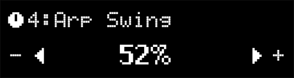
Swing is a “behind the beat” feeling instead of a perfectly even rhythmic pulse.
With 1/8 chosen as a division and Swing set to Off (which is actually 50%), all eighth notes are played evenly. By increasing the Swing factor, every second note in an eighth note group will play later. At 67%, you get a true (exact) swing feel. Values in the 55–64 range give a slightly jerky feel that can be magic in some cases.
This behaviour of course applies to all divisions – 1/8, 1/16, and 1/32.
4.5.5.5. Gate
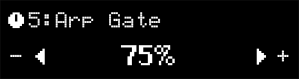
Gate time is the duration window during which each note is allowed to “speak,” and it’s the same from note to note. Lower gate times result in a more clipped or staccato sound, while longer ones give the full envelope of the notes more of a chance to play out.
♪ If the volume envelope of a sound has a long release, reducing the Gate time helps arpeggiated
notes sound more defined.
4.5.5.6. Rate
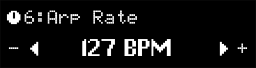
This parameter adjusts the rate of the Arpeggiator in beats per minute, but only when the Sync parameter is set to Internal. If you turn this knob while external Sync is set, the message “Ext Sync selected” is displayed.
You can also set the rate using Tap Tempo [p.15].
14 Arturia - User Manual MiniLab 3 - MiniLab 3 operations
Trang 19
4.5.5.7. Sync
There are two options here: Internal and External.
• Int: Arpeggiator Rate is determined by MiniLab 3’s internal clock and Rate setting (see above).
• Ext: Arpeggiator Rate is determined by the tempo set in host software such as a DAW. If there is no clock detected by the Arpeggiator, playing the MiniLab 3 keyboard will have no effect. Also, you'll have to make sure a clock is sent to the usb port of the ML3 and don't forget to press play in your DAW.
♪ Which one to use? If you’re playing Analog Lab in stand-alone mode, using MiniLab 3’s internal
tempo lets you quickly tweak the rate across everything you’re doing. Likewise if you’re controlling
a hardware synth module from the 5-pin MIDI port. If Analog Lab or another instrument is a plug-in
within a DAW session, then of course you’ll want to set MiniLab 3 to External and let your DAW direct
tempo.
4.5.5.8. Octave
The Arpeggiator can play notes in a range of zero to three octaves up. At zero, it plays only the actual notes as held on the keyboard, at 1 it adds one octave up and so on.
4.6. Tap Tempo
Tap Tempo lets you set MiniLab 3’s internal clock for the Arpeggiator by tapping in a beat. If performing with bandmates that include a live drummer — or drum machine that’s not MIDI’ed to anything — this lets you sync up MiniLab 3 by ear.
Hold Shift and tap Pad 8 at least 4 times. The tempo will be the average of last 4 taps. The more times you tap, the better the clock will match whatever beat is in the air.
Arturia - User Manual MiniLab 3 - MiniLab 3 operations 15
Trang 20
4.7. Hold Mode
The button marked Hold will hold the last note(s) played until a new note is played or until you disengage the Hold function.
You activate Hold by pressing its button. The button will light up and the display will say Hold mode ON. You turn off Hold by pressing the button again.
The Hold function differs from using a sustain pedal. After pressing a sustain pedal, every note you play will keep sustaining until you release the pedal. In Hold mode, only notes that are played simultaneously will be held. Example: Activate Hold mode and play C and G, then release the keys. Those two notes will now keep on sounding until you hit a new key or keys; C and G will stop playing and the newly added note(s) will be held.
4.8. Chord Mode
MiniLab 3 includes a Chord Mode that memorizes chords you input and then allows you to play them from one key, transposing as it goes.
Chord information is transmitted as MIDI data over the USB-C port and/or 5-pin MIDI output, depending on which are selected in your host software’s MIDI settings.
To turn chord mode on and off, hold Shift and press the Hold button. Playing one note will play the last recorded chord.
4.8.1. Creating a Chord
Hold the Shift button and then press and hold the Hold button. Now, play the chord you want MiniLab 3 to memorize on the keyboard, either all at once or adding a note at a time. The display shows the following:
Then, release the Shift and Hold buttons. Chord mode is automatically enabled. Your chord is now memorized and will be retained if you leave Chord Mode and return, and even if MiniLab 3 is powered off. To overwrite the chord with a new one, simply repeat the process.
16 Arturia - User Manual MiniLab 3 - MiniLab 3 operations
Trang 21
! If you want the lowest note in the chord to be the root note (this should be the most common
preference), make sure to play the lowest note before the other notes (when creating a chord).
You exit Chord mode by holding the Shift button and pressing Hold.
4.8.2. The Arpeggiator, Chord Mode and Hold Mode
Chord Mode interacts with the Arpeggiator. If both are turned on, the Arpeggiator plays the notes in the memorized chord, applying all of the other settings such as Mode, Division, etc. Now, engage Hold (which will pulse between white and blue light when Chord Mode is on) and you can change the musical key of the Arpeggiator by striking single notes, setting your hands free to tweak other things in your session!
! Remember that Hold can be activated by its own for long evolving pads, for instance.
4.9. Vegas Mode
If left idle, MiniLab 3 will go into what we call “Vegas Mode,” which is akin to a computer screensaver. The OLED display will go dark and the pads will cycle through a rainbow of colors.
Simply play a key or touch any control on MiniLab 3 to return to normal operation.
! In the MIDI Control Center app you can set the time before Vegas Mode kicks in or disable Vegas
mode and let MiniLab 3 go into sleep mode instead (with screen and LEDs off). By default, Vegas Mode
starts after 5 minutes.
4.10. Factory Reset
! This procedure will erase all user presets and device settings and restore them to factory defaults.
Use the MIDI Control Center software to back up your changes first.
To reset the MiniLab 3 to its original factory settings:
1. Unplug the USB-C cable from the back of the keyboard.
2. Hold down the Oct- and Oct+ buttons.
3. Plug the USB-C cable back in and continue to hold the buttons until the pads turn on. The screen displays Factory Reset, and then the MiniLab 3 starts its bootsequence.
Arturia - User Manual MiniLab 3 - MiniLab 3 operations 17
Trang 22
5. MINILAB 3 AND ANALOG LAB
This chapter will focus mostly on how MiniLab 3 interacts with Analog Lab Intro and Analog Lab V – a browser of preset sounds from keyboard and synth instruments that shaped music history. So you will find only basic coverage of the various Analog Lab parameters that MiniLab 3 controls, although these apply to the full version of Analog V as well. For more details about Analog Lab Intro or other versions of Analog Lab, please refer to the appropriate user manual.
! There’s also an affordable and simple way to upgrade Analog Lab Intro to the full version of Analog
Lab V, which provides access to many more sounds. To upgrade, go to www.arturia.com/analoglab-
update.
5.1. Important Note — It’s All Malleable
Everything dewscribed here covers a default operating mode designed to get you up and running quickly with MiniLab and your Analog Lab Intro or Analog Lab V. There are many ways this can change. The biggest is that you can create and enable user custom controller mappings in the MIDI Control Center app (see separate manual). Also, the parameters assigned to a Macro surely vary from Preset to Preset, so what you hear when you turn knobs 1-4 will be different.
You can also treat MiniLab 3 as a generic MIDI controller, overriding the default control assignments by directly MIDI “Learn”-ing new ones from within any Arturia instrument — select the MIDI settings tab, click learn, choose a parameter onscreen, and wiggle a control on MiniLab 3.
Last but not least, MiniLab 3 works like any other MIDI controller with non-Arturia software and plug-ins, but with the advantage of MIDI Control Center letting you determine exactly what messages and values each of its controls sends.
5.2. Audio and MIDI Setup
The first thing to do after launching Analog Lab is to make sure the software is set to output audio correctly and that it will receive MIDI from the MiniLab 3 keyboard. When you're using Analog Lab as standalone, in MIDI Devices, you just need to tick MiniLab3 MIDI to make it work. Ticking MiniLab3 ALV is not necessary, but if you do so, it shouldn't be an issue.
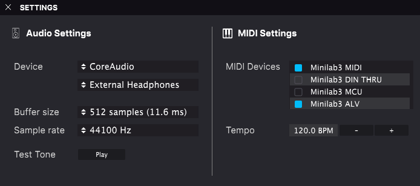
18 Arturia - User Manual MiniLab 3 - MiniLab 3 and Analog Lab
Trang 23
If running Analog Lab in stand-alone mode, open its Audio MIDI Settings from the main menu. If using Analog Lab as a plug-in inside your DAW, open the MIDI preferences and select Minilab 3 MIDI in the input list, then create an Analog Lab track and arm it: you will now be able to play and control Analog Lab into your favorite DAW.
The above screen shows the settings in Analog Lab V stand-alone. Configure your audio device as desired. The important thing here are the three MIDI ports/devices that MiniLab 3 shows to Analog Lab or any DAW:
• MiniLab 3 MIDI: Enables MIDI communication via the USB-C port on MiniLab 3.
• MiniLab 3 DIN Thru: Passes outgoing MIDI information from the host software through MiniLab 3’s 5-pin MIDI out connector. This can be useful when you want to sequence and control hardware synths with your DAW using MiniLab 3 as a MIDI interface.
• MiniLab 3 MCU: Enables MiniLab 3 as a Mackie Control Universal surface via a dedicated port, to not interfere with other MIDI messages as notes or control changes.
• MiniLab 3 ALV: Transmits screen messages from Analog Lab V to MiniLab 3.
You will almost always want MiniLab 3 MIDI turned on. If using MiniLab 3 to control any of the custom supported DAWs [p.24] described in the next chapter, ensure MiniLab 3 MCU is not activated.
5.2.1. Analog Lab MIDI Settings
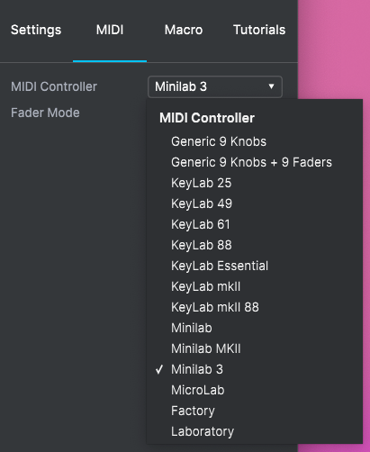
Click the gear icon at the upper right corner of Analog Lab (it’s present in both plug-in and stand-alone modes) to open the Settings section. Click on the MIDI tab and select MiniLab 3 from the MIDI Controller drop-down menu, if it has not already beed automatically detected.
This will select a template of custom controller mappings. When Controls is engaged in the lower toolbar, a duplicate of MiniLab 3’s controls are displayed at the bottom of the screen, like so:
Arturia - User Manual MiniLab 3 - MiniLab 3 and Analog Lab 19
Trang 24
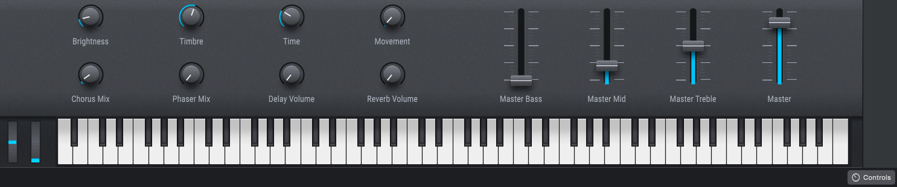
Now make sure the ARTURIA program mode is selected by holding Shift and pressing Pad 3.
5.3. Browsing Presets
One of the first things MiniLab 3 can do in Analog Lab is browse and select sound Presets using the main black knob.
Turn the main encoder knob to scroll through the Presets shown in the central search results area of Analog Lab’s browser. Press the knob to load a Preset. The display will show the Preset name and its Type:
! A check mark in front of the preset indicates that the preset has been loaded.
Long-pressing the knob will then add the Preset to your Liked Presets, or remove it if it was previously Liked. A heart icon appears to indicate a liked preset.
5.3.1. Browsing Within Types
You can also drill partway down into the “tree structure” of Analog Lab’s Preset hierarchy, specifically the categories of Presets known as Types.
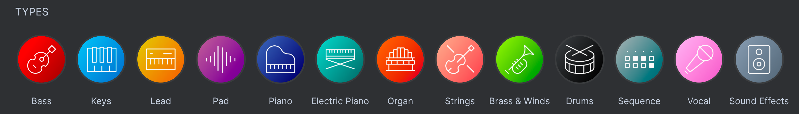
Hold Shift and you will see this screen:
20 Arturia - User Manual MiniLab 3 - MiniLab 3 and Analog Lab
Trang 25
While holding Shift, turn the main encoder (the one below the display) to browse through the different instrument Types. Press the encoder (while still holding Shift) to select that Type. You can now turn the encoder without holding Shift to scroll through instruments only within the chosen Type.
Note: At this time, only Type browsing is supported. There is not currently a way to browse within
Styles, Characteristics, or Designers directly from MiniLab 3. Of course, you can do this in the Analog
Lab software, and MiniLab 3 will correctly display the chosen Preset and Sub-Type.
To go back up a level in the hierarchy when browsing Presets within a Type (i.e. to the level where you’re selecting Types), hold Shift and scroll to the Back screen (usually the first item) within any Type:
5.3.1.1. Navigating Types and Sub-Types
• To browse between Types: Hold Shift and turn the Main encoder knob.
• To select a Type: Press encoder.
• To display all Presets within a Type: Click on a Type to select it, then release Shift without selecting a Sub-Type. All Presets within that Type are now listed on your computer screen.
• To browse Sub-Types: Click on a Type, then keep Shift pressed and turn the main encoder. You are now browsing within Sub-Types.
• To display all Presets within a Sub-Type: Click on a Sub-Type. All Presets within that Sub-Type are now listed on your computer screen.
• To go back to the parent Type: Scroll Sub-Types to the left until you reach the first one. It's called "Back". Click on it and you're now able to browse Types again. Clicking on it also removes the Sub-Type or Type previously selected (it's a handy way to "clear" the search bar).
5.4. Knobs and Faders
With MiniLab 3 in ARTURIA mode (Shift + Pad3) and MiniLab 3 selected as the MIDI controller in the MIDI settings [p.19], the knobs and faders are dedicated to parameters in a way intended to make your live performances and studio tweaking super smooth.
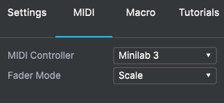
Please make sure that MiniLab 3 is selected as your controller under the
cogwheel in the upper right corner
Arturia - User Manual MiniLab 3 - MiniLab 3 and Analog Lab 21
Trang 26
5.4.1. Knobs 1-4
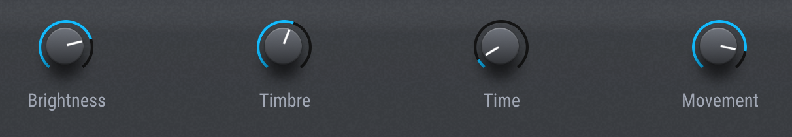
Knobs 1-4 are assigned to the Arturia instrument’s Macros. Since you can assign multiple parameters to a Macro, you can get a lot of mileage out of twisting a single knob on MiniLab 3. This is even more true if you own full versions of V Collection instruments, which you can then open inside of Analog Lab to map their internal parameters to Macros.
Knob Macro Corresponding MIDI CC
1 Brightness 74 (Filter cutoff frequency)
2 Timbre 71 (Filter resonance)
3 Time 76 (Sound control 7)
4 Movement 77 (Sound control 8)
5.4.2. Knobs 5-8
Knobs 5-8 are assigned to effects parameters. Analog Lab has two insert effects slots per Preset, plus send-based Delay and Reverb.
Knob Parameter Corresponding MIDI CC
5 FX A Dry/Wet 93 (Chorus level)
6 FX B Dry/Wet 18 (General purpose)
7 Delay Volume 19 (General purpose)
8 Reverb Volume 16 (General purpose)
22 Arturia - User Manual MiniLab 3 - MiniLab 3 and Analog Lab
Trang 27
5.4.3. Faders
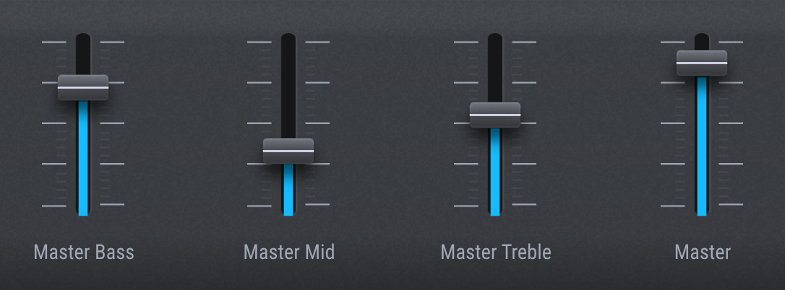
The four faders are assigned to master volume and the three-band EQ on Analog Lab’s master output.
Fader Parameter Corresponding MIDI CC
1 Bass 82 (General purpose 3)
2 Midrange 83 (General purpose 4)
3 Treble 85 (Undefined)
4 Master Volume 17 (General purpose)
5.4.4. Pads
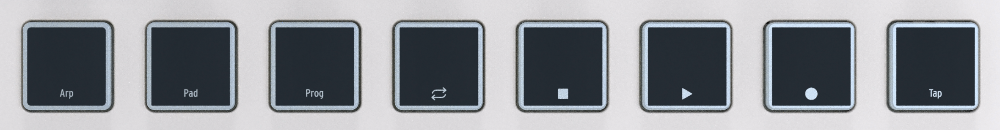
In Analog Lab, MiniLab 3’s pads send MIDI notes as outlined in the previous chapter. The default notes are:
Pad Bank 1 2 3 4 5 6 7 8
A 36 (C2) 37 (C#2) 38 (D2) 39 (D#2) 40 (E2) 41 (F2) 42 (F#2) 43 (G2)
B 44 (G#2) 45 (A2) 46 (A#2) 47 (B2) 48 (C3) 49 (C#3) 50 (D3) 51 (D#3)
Arturia - User Manual MiniLab 3 - MiniLab 3 and Analog Lab 23
Trang 28
6. DAW CONTROL
MiniLab 3 can control all popular DAW (digital audio workstation) software programs. Some are directly integrated with MiniLab 3 and others utilize the widely used Mackie Control Universal (MCU) protocol.
Functionality varies depending upon the software, but things MiniLab 3 can do include browsing and selecting tracks; scrolling through the timeline; adjusting track volumes, sends, and pans; adjusting select parameters inside plug-ins; and controlling the transport using the pads.
6.1. Custom Controlled DAWs
This section provides some general information on how you can remotely control the DAWs that are fully integrated with MiniLab 3.
For more details about controlling the 5 DAWs that have been fully integrated with MiniLab 3, please refer to the dedicated quick start documents for each DAW.
To begin using MiniLab 3 in DAW Control mode, hold Shift and press Pad 3 so that the display reads “DAW”. MiniLab 3 is now ready to remotely control these fully integrated DAWs:
• Ableton Live
• Bitwig Studio
• Apple Logic Pro
• Image-Line FL Studio
• Reason Studios Reason
! Clarification: MiniLab 3 can remotely control Loop On/Off, Stop, Play, and Record in any DAW. Full
integration will be added to more DAWs in the future. In the meantime, the user can use create similar
functionality in MIDI Control Center. ! Please remember to hold Shift while using the Transport pads.
When set to DAW, MiniLab 3 will automatically recognize and connect to the DAW. If your DAW isn't recognized, please check your DAW's MIDI settings and make sure your DAW is up to date.
If MiniLab 3 still doesn't recognize the DAW, please refer to these manuals for full info on installation and trouble-shooting.
! For all custom-controlled DAWs, be sure to disable the MiniLab 3 MCU MIDI port in the DAW’s MIDI
preferences. This will avoid conflicts between the custom DAW mode and the Mackie Control Universal
protocol. ! Of course you can use all other MiniLab 3 features – like Hold, Chord, Arpeggiator, Transpose
etc. – in any DAW.
24 Arturia - User Manual MiniLab 3 - DAW Control
Trang 29
6.1.1. Transport Control
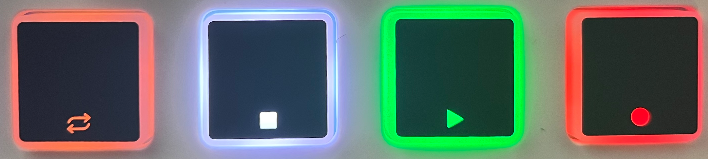
Holding Shift allows you to use Pads 4–8 to control your DAW transport. This works similarly across all supported DAWs.
Pad Function Display Feedback
4 Loop Mode On/Off Loop Mode ON/OFF
5 Stop PLAY icon in the lower left corner
6 Play/Pause PLAY icon in the lower left corner disappears
7 Record Record icon appears in the upper left corner
8 Tap Tempo Tap Tempo XX BPM when tapping this pad
Buttons are lit more brightly when their functions are engaged, as shown by the example of the play button in the above photo.
In addition to the above functions, there are numerous DAW-specific functionality in the 5 DAWs currently supported. For full info, please refer to these manuals in our FAQ section.
6.2. DAW Control with Mackie Control Universal
DAWs for which we do not have custom scripts as of MiniLab 3’s release (e.g. Steinberg's Cubase) may still be controlled using the Mackie Control Universal (MCU) protocol, which originated with the Mackie hardware control surface of the same name.
Setting up MCU varies from one DAW to another, so consult your DAW’s documentation for details. In general, however, you will take these steps:
• Enable the MIDI input port MiniLab3 MCU in your DAW’s MIDI preferences.
• Add and set up Mackie Control in your DAW’s “Control Surfaces” settings if it has them.
Arturia - User Manual MiniLab 3 - DAW Control 25
Trang 30
6.3. Analog Lab Mode
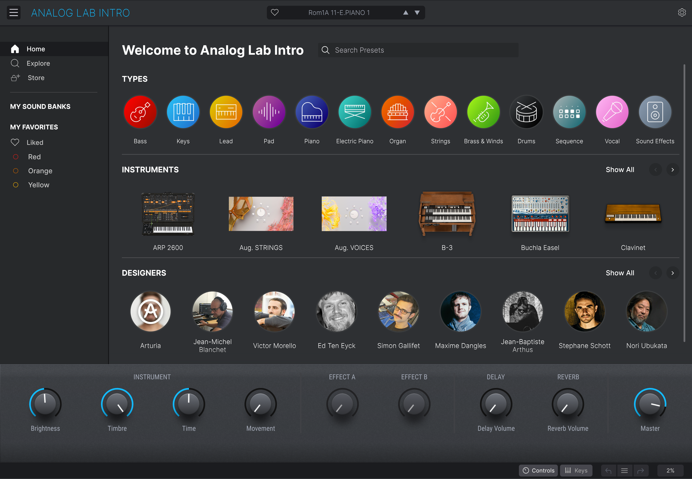
Almost any DAW on the planet will host third-party plug-in instruments, including Analog Lab V or the copy of Analog Lab Intro included with MiniLab 3. You can use MiniLab 3 to control Analog Lab inside your DAW (although not at the same time you’re controlling the DAW itself).
With Analog Lab’s host track armed and selected in your DAW, hold Shift and press Pad 3 until the display reads “Analog Lab” (plus the applicable suffix like “V” or “Intro”). MiniLab 3 is now running its Analog Lab-specific program, and you should be able to control all aspects of Analog Lab as covered in Chapter 4 [p.18].
26 Arturia - User Manual MiniLab 3 - DAW Control
Trang 31
7. DECLARATION OF CONFORMITY
USA
Important notice: DO NOT MODIFY THE UNIT!
This product, when installed as indicated in the instructions contained in this manual, meets FCC requirement. Modifications not expressly approved by Arturia may avoid your authority, granted by the FCC, to use the product.
IMPORTANT: When connecting this product to accessories and/or another product, use only high quality shielded cables. Cable (s) supplied with this product MUST be used. Follow all installation instructions. Failure to follow instructions could void your FFC authorization to use this product in the USA.
NOTE: This product has been tested and found to comply with the limits for a Class B Digital device, pursuant to Part 15 of the FCC rules. These limits are designed to provide a reasonable protection against harmful interference in a residential environment. This equipment generate, use and radiate radio frequency energy and, if not installed and used according to the instructions found in the users manual, may cause interferences harmful to the operation to other electronic devices. Compliance with FCC regulations does not guarantee that interferences will not occur in all the installations. If this product is found to be the source of interferences, which can be determined by turning the unit “OFF” and “ON”, please try to eliminate the problem by using one of the following measures:
• Relocate either this product or the device that is affected by the interference.
• Use power outlets that are on different branch (circuit breaker or fuse) circuits or install AC line filter(s).
• In the case of radio or TV interferences, relocate/ reorient the antenna. If the antenna lead-in is 300 ohm ribbon lead, change the lead-in to coaxial cable.
• If these corrective measures do not bring any satisfied results, please contact the local retailer authorized to distribute this type of product. If you cannot locate the appropriate retailer, please contact Arturia.
The above statements apply ONLY to those products distributed in the USA.
CANADA
NOTICE: This class B digital apparatus meets all the requirements of the Canadian Interference-Causing Equipment Regulation.
AVIS: Cet appareil numérique de la classe B respecte toutes les exigences du Règlement sur le matériel brouilleur du Canada.
EUROPE
This product complies with the requirements of European Directive 2014/30/EU
This product may not work correctly by the influence of electro-static discharge; if it happens, simply restart the product.
Arturia - User Manual MiniLab 3 - Declaration of Conformity 27
Trang 32
8. SOFTWARE LICENSE AGREEMENT
In consideration of payment of the Licensee fee, which is a portion of the price you paid, Arturia, as Licensor, grants to you (hereinafter termed “Licensee”) a nonexclusive right to use this copy of the MiniLab 3 firmware (hereinafter the “SOFTWARE”).
All intellectual property rights in the software belong to Arturia SA (hereinafter: “Arturia”). Arturia permits you only to copy, download, install and use the software in accordance with the terms and conditions of this Agreement.
The product contains product activation for protection against unlawful copying. The OEM software can be used only following registration.
Internet access is required for the activation process. The terms and conditions for use of the software by you, the end-user, appear below. By installing the software on your computer you agree to these terms and conditions. Please read the following text carefully in its entirety. If you do not approve these terms and conditions, you must not install this software. In this event give the product back to where you have purchased it (including all written material, the complete undamaged packing as well as the enclosed hardware) immediately but at the latest within 30 days in return for a refund of the purchase price.
1. Software Ownership
Arturia shall retain full and complete title to the SOFTWARE recorded on the enclosed disks and all subsequent copies of the SOFTWARE, regardless of the media or form on or in which the original disks or copies may exist. The License is not a sale of the original SOFTWARE.
2. Grant of License
Arturia grants you a non-exclusive license for the use of the software according to the terms and conditions of this Agreement. You may not lease, loan or sub-license the software.
The use of the software within a network is illegal where there is the possibility of a contemporaneous multiple use of the program.
You are entitled to prepare a backup copy of the software which will not be used for purposes other than storage purposes.
You shall have no further right or interest to use the software other than the limited rights as specified in this Agreement. Arturia reserves all rights not expressly granted.
3. Activation of the Software
Arturia may use a compulsory activation of the software and a compulsory registration of the OEM software for license control to protect the software against unlawful copying. If you do not accept the terms and conditions of this Agreement, the software will not work.
In such a case the product including the software may only be returned within 30 days following acquisition of the product. Upon return a claim according to § 11 shall not apply.
4. Support, Upgrades and Updates after Product Registration
You can only receive support, upgrades and updates following the personal product registration. Support is provided only for the current version and for the previous version during one year after publication of the new version. Arturia can modify and partly or completely adjust the nature of the support (hotline, forum on the website etc.), upgrades and updates at any time.
The product registration is possible during the activation process or at any time later through the Internet. In such a process you are asked to agree to the storage and use of your personal data (name, address, contact, email-address, and license data) for the purposes specified above. Arturia may also forward these data to engaged third parties, in particular distributors, for support purposes and for the verification of the upgrade or update right.
28 Arturia - User Manual MiniLab 3 - Software License Agreement
Trang 33
5. No Unbundling
The software usually contains a variety of different files which in its configuration ensure the complete functionality of the software. The software may be used as one product only. It is not required that you use or install all components of the software. You must not arrange components of the software in a new way and develop a modified version of the software or a new product as a result. The configuration of the software may not be modified for the purpose of distribution, assignment or resale.
6. Assignment of Rights
You may assign all your rights to use the software to another person subject to the conditions that (a) you assign to this other person (i) this Agreement and (ii) the software or hardware provided with the software, packed or preinstalled thereon, including all copies, upgrades, updates, backup copies and previous versions, which granted a right to an update or upgrade on this software, (b) you do not retain upgrades, updates, backup copies und previous versions of this software and (c) the recipient accepts the terms and conditions of this Agreement as well as other regulations pursuant to which you acquired a valid software license.
A return of the product due to a failure to accept the terms and conditions of this Agreement, e.g. the product activation, shall not be possible following the assignment of rights.
7. Upgrades and Updates
You must have a valid license for the previous or more inferior version of the software in order to be allowed to use an upgrade or update for the software. Upon transferring this previous or more inferior version of the software to third parties the right to use the upgrade or update of the software shall expire.
The acquisition of an upgrade or update does not in itself confer any right to use the software.
The right of support for the previous or inferior version of the software expires upon the installation of an upgrade or update.
8. Limited Warranty
Arturia warrants that the disks on which the software is furnished is free from defects in materials and workmanship under normal use for a period of thirty (30) days from the date of purchase. Your receipt shall be evidence of the date of purchase. Any implied warranties on the software are limited to thirty (30) days from the date of purchase. Some states do not allow limitations on duration of an implied warranty, so the above limitation may not apply to you. All programs and accompanying materials are provided “as is” without warranty of any kind. The complete risk as to the quality and performance of the programs is with you. Should the program prove defective, you assume the entire cost of all necessary servicing, repair or correction.
9. Remedies
Arturia's entire liability and your exclusive remedy shall be at Arturia's option either (a) return of the purchase price or (b) replacement of the disk that does not meet the Limited Warranty and which is returned to Arturia with a copy of your receipt. This limited Warranty is void if failure of the software has resulted from accident, abuse, modification, or misapplication. Any replacement software will be warranted for the remainder of the original warranty period or thirty (30) days, whichever is longer.
10. No other Warranties
The above warranties are in lieu of all other warranties, expressed or implied, including but not limited to, the implied warranties of merchantability and fitness for a particular purpose. No oral or written information or advice given by Arturia, its dealers, distributors, agents or employees shall create a warranty or in any way increase the scope of this limited warranty.
Arturia - User Manual MiniLab 3 - Software License Agreement 29
Trang 34
11. No Liability for Consequential Damages
Neither Arturia nor anyone else involved in the creation, production, or delivery of this product shall be liable for any direct, indirect, consequential, or incidental damages arising out of the use of, or inability to use this product (including without limitation, damages for loss of business profits, business interruption, loss of business information and the like) even if Arturia was previously advised of the possibility of such damages. Some states do not allow limitations on the length of an implied warranty or the exclusion or limitation of incidental or 0consequential damages, so the above limitation or exclusions may not apply to you. This warranty gives you specific legal rights, and you may also have other rights which vary from state to state.
30 Arturia - User Manual MiniLab 3 - Software License Agreement